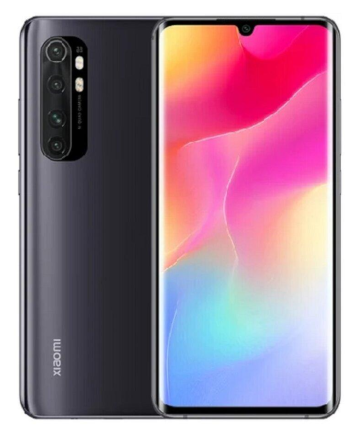
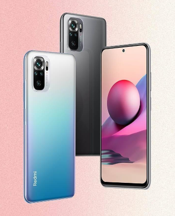

Без смартфонов невозможно представить жизнь современного человека. Этот гаджет позволяет решать многие повседневные задачи. Что нужно знать, чтобы купить качественный смартфон с необходимым функционалом? В данной статье рассказываются секреты и нюансы выбора подходящей техники.
Смартфоны: выбор качественного гаджета
Смартфоны относят к классу мобильных многоцелевых вычислительных устройств. В отличие от обычных телефонов, которые еще встречаются в продаже, они имеют более мощные аппаратные возможности и оснащаются разнообразными операционными системами.

Главное преимущество смартфонов – наличие множества полезных функций, а также возможность расширения имеющегося программного обеспечения. Чтобы купить подходящее устройство, способное удовлетворить любые запросы пользователя, требуется знать возможности гаджетов и нюансы их выбора.
Возможности устройств
Смартфоны способны на многое. Кроме того, что они обеспечивают связь, их также используют в качестве GPS-трекеров, например, как Mi Note 10 Lite, который к тому же оснащен системой ГЛОНАСС, мультимедийных проигрывателей и в качестве электронных приборов для чтения книг. Некоторые модели оснащаются такой удобной опцией, как удаленный доступ к компьютеру. Такие смартфоны позволяют работать с документами и прочими файлами в любом месте без помощи ПК.
Смартфон может стать неотъемлемым атрибутом тех, кто ведет спортивный образ жизни и следит за своим здоровьем. За счет установленных приложений гаджет может отслеживать сердечный ритм, проверять вес, следить за сном, а также вести учет потребляемых калорий.
Конечно, приведенные здесь примеры далеко не единственная демонстрация того, на что способны смартфоны. И, естественно, их возможности намного шире, а потому при выборе гаджета стоит учитывать собственные потребности и задачи, которые нужно решить с помощью этого устройства.
Критерии выбора
Прежде чем купить устройство, необходимо разобраться в том, из каких компонентов он состоит. Среди ключевых комплектующих любого современного смартфона есть:
Именно характеристики этих узлов являются основных критерием выбора подходящей модели умного телефона.
Экран
Дисплей – одна из главных частей смартфона. При выборе устройства стоит обращать внимание на такие характеристики экрана, как размер диагонали, тип матрицы и разрешение.

Что касается первого пункта, то большинство девайсов имеют диагональ в 4-5 дюймов. Эти параметры считаются оптимальными – смартфон легко помещается в ладонь и не вызывает трудностей при работе. Конечно, не меньшим спросом пользуются и модели с диагональю экрана свыше 6 дюймов. Например, Xiaomi Redmi Note 5 с подобными параметрами как нельзя лучше подходит для просмотра видео контента и прохождения игр.
Тип матрицы, как правило, зависит от производителя. Самые распространенные варианты:
Опытные пользователи советуют брать устройства с матрицей IPS. Главное преимущество таких экранов – широкие углы обзора, когда картинка остается детализированной, независимо от положения гаджета.
И последний критерий – разрешение. Для смартфона с дисплеями менее 5,7 дюймов оптимальным будет HD разрешение (1280х720). Для более габаритных моделей – 1920х1080 пикселей. Высокое разрешение позволяет получить максимально качественную и детализированную картинку.
Процессор
SoC (система-на-кристалле) – однокристальная система, работающая на единственном чипе и включающая в себя несколько процессорных частей, память и прочие необходимые для работы устройства компоненты. Главное, на что нужно обращать внимание при выборе процессора смартфона – техпроцесс. Измеряется данный показатель в нанометрах и означает размеры транзисторов, из которых собран процессор. Чем меньше эта цифры, тем производительней и мощней смартфон.
Большинство современных чипсетов изготавливаются по 8, 10 или 12-нанометровому техпроцессу. Например, процессоры смартфона Zte Blade 20 Smart производятся по 12-нанометровому технологическому процессору, что позволяет добиться довольно хорошей производительности устройства. Купить данную модель можно в интернет магазине Озон.
Память
Память внутри смартфона бывает следующих типов:
Первая отвечает за многозадачность гаджета, то есть, сколько можно одновременно запустить приложений. Рекомендуемые показатели, позволяющие использовать телефон без «зависаний» и ошибок – 3-4 ГБ. Более дорогие модели, особенно флагманы, оснащаются «оперативкой» до 18 Гб.
Постоянная память необходима для хранения личной информации пользователя и файлов установленных приложений. Обычно объем начинается с 8 Гб и может доходить вплоть до 1 Тб, что по большей части является излишеством. Обычному пользователю вполне хватит 32-64 Гб, а в случае нехватки можно всегда докупить карту памяти.
Камера
При выборе камеры нужно оценивать качество съемки именно основным модулем. Причем не стоит отдавать предпочтения модулям с большим количеством мегапикселей, потому как высокое их количество может только ухудшать картинку.
Главное же, что нужно учитывать – диафрагму и диагональ матрицы. Большой размер диафрагмы позволяет захватить больше света и сделать снимок четче и детальнее. Того же касается и матрицы – чем она крупнее, тем лучше получается изображение.
Батарея
Есть монолитные и съемные аккумуляторные батареи. Последние с каждым годом встречаются все реже и реже. Все дело в том, что производители при изготовлении смартфонов основной упор делают на привлекательность дизайна. А так как съемные АКБ делают устройство громоздким и не особо эстетичным, то естественно их применяют все меньше.
Что касается емкости батареи, то оптимальными считаются параметры от 3000 до 5000 мАч. Такого объема вполне хватает, чтобы обеспечить автономность аппарата на 12 часов при средней нагрузке.